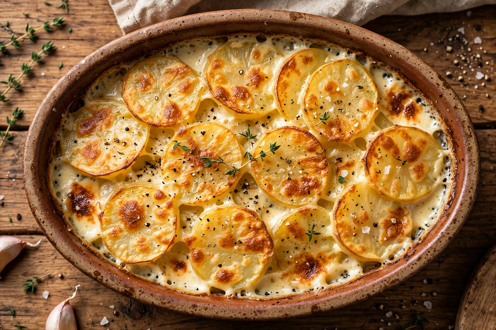

| Gratin | |
 | |
| Type | Cooking technique / baked dish |
|---|---|
| Place of origin | France |
| Main ingredients | Breadcrumbs and/or grated cheese over a sauced base |
| Well-known dishes | Gratin dauphinois, cauliflower cheese, macaroni au gratin, scalloped potatoes |
A gratin (French pronunciation: [ɡʁatɛ̃]) is a culinary technique in which an ingredient is topped with a browned crust, often using breadcrumbs, grated cheese, egg, or butter. Gratins are usually prepared in a shallow dish and served in their cooking vessel. The word also denotes dishes prepared by this method — described as au gratin — and, by extension, the crisp crust itself (from the French gratter, "to scrape" or "grate," and gratiner, "to crust").
The defining feature of a gratin is a golden, crisped top produced under a broiler (grill) or in a hot oven. A base of sliced or chopped ingredients — frequently bound with a sauce such as béchamel or Mornay, or simply cream — is scattered with cheese and/or buttered breadcrumbs and baked until the surface colours. Historically, the crust was achieved in a wood-fired oven or with a red-hot salamander or fire shovel held over the dish.
Gratin is closely related to casserole baking, but a casserole need not have a crust; the browned topping is essential to the gratin. Dishes finished in a similar way include the Kentucky Hot Brown, whose Mornay sauce is browned under the broiler, and various crumbles and crusted gratins of vegetables and fish found throughout European cooking.
See also: Béchamel sauce, Mornay sauce, Dauphiné, Casserole